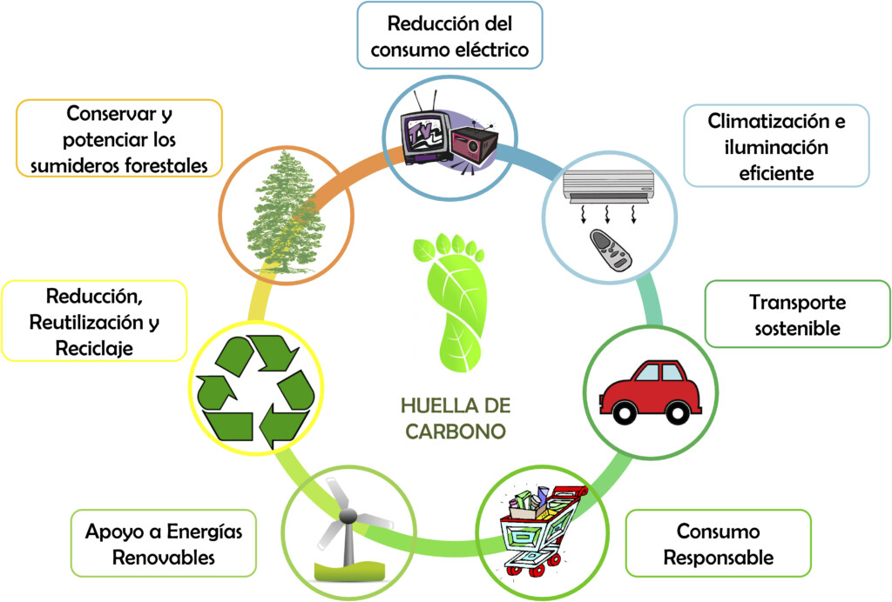

Petjada de Carboni
Anàlisi i quantificació de l'impacte ambiental dels gasos d'efecte hivernacle.

Què és la Petjada de Carboni?
La Petjada de Carboni és una mètrica ambiental clau que mesura la quantitat total de gasos d'efecte hivernacle (GEI) emesos de forma directa o indirecta per un individu, organització, esdeveniment o producte. S'expressa comunament en tones o quilos de CO₂ equivalent (CO₂e).
Dins de l'àmbit de la informàtica (TIC) i la gestió de sistemes, la petjada de carboni permet avaluar l'impacte del consum energètic dels servidors, centres de dades, servidors Cloud i el cicle de vida dels equips informàtics.
Fórmula de càlcul: Petjada de Carboni = Dato d'activitat × Factor d'emissió.
Àmbits d'Emissió (GHG Protocol)
- Àmbit 1 (Emissions Directes): Emissions generades directament per l'entitat (vehicles corporatius, calderes).
- Àmbit 2 (Emissions Indirectes per Energia): Emissions associades a l'electricitat consumida per equips i servidors.
- Àmbit 3 (Altres Emissions Indirectes): Emissions de la cadena de subministrament, residus i fabricació de maquinari.